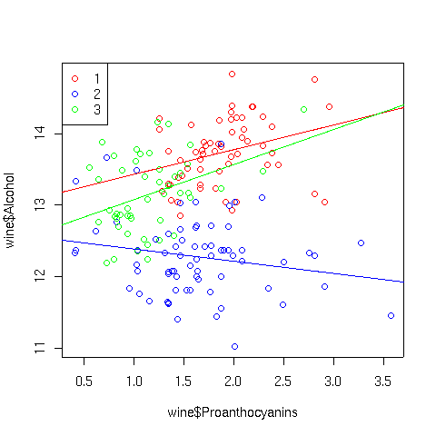
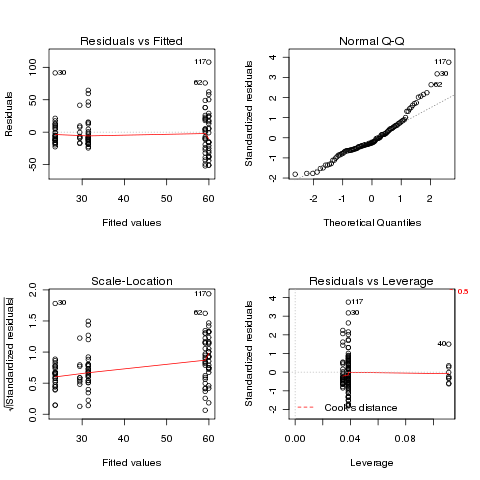
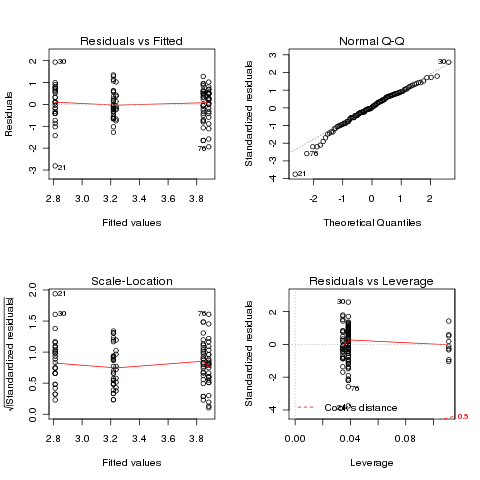
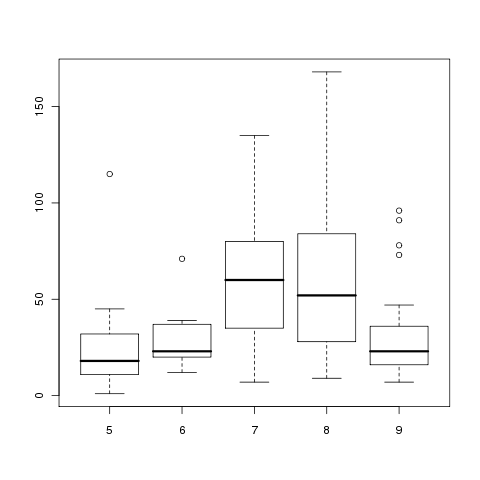

Analysis of Variance
As another example, consider a data set with information about experience, gender,
and wages. Experience is recorded as number of years on the job, and gender is recorded
as 0 or 1. To see if the slope of the line relating experience to wages is different
for the two genders, we can proceed as follows:
> wages = read.delim('http://www.stat.berkeley.edu/classes/s133/data/wages.tab')
> wages$gender = factor(wages$gender)
> wages.aov = aov(wage ~ experience*gender,data=wages)
> anova(wages.aov)
Analysis of Variance Table
Response: wage
Df Sum Sq Mean Sq F value Pr(>F)
experience 1 106.7 106.69 4.2821 0.03900 *
gender 1 635.8 635.78 25.5175 6.042e-07 ***
experience:gender 1 128.9 128.94 5.1752 0.02331 *
Residuals 530 13205.3 24.92
---
Signif. codes: 0 '***' 0.001 '**' 0.01 '*' 0.05 '.' 0.1 ' ' 1
The significant probability value for experience:gender indicates
that the effect of experience on wages is different depending on the gender of the
employee. By performing two separate regressions, we can see the values for the
slopes for the different genders:
> coef(lm(wage~experience,data=subset(wages,gender == 0)))
(Intercept) experience
8.62215280 0.08091533
> coef(lm(wage~experience,data=subset(wages,gender == 1)))
(Intercept) experience
7.857197368 0.001150118
This indicates that there is a small increase in wages as experience increases
for gender == 0, but virtually no increase for gender == 1.
1 Constructing Formulas
For the examples we've looked at, there weren't so many terms in the model that
it became tedious entering them by hand, but in models with many interactions
it can quickly become a nuisance to have to enter every term into the model.
When the terms are all main effects, you can often save typing by using a
data= argument specifying a data set with just the variables you are
interested in and using the period (.) as the right-hand side of the
model, but that will not automatically generate interactions.
The formula function will accept a text string containing a formula,
and convert it to a formula that can be passed to any of the modeling functions.
While it doesn't really make sense for the wine data, suppose we
wanted to add Cultivar and all the interactions between Cultivar
and the independent variables to our original regression model.
The first step is to create a vector of the variables we want to work with.
This can usually be done pretty easily using the names of the data frame
we're working with.
> vnames = names(wine)[c(3,5,10,11,13,14)]
For the main part of the model we need to join together these names with
plus signs (+):
> main = paste(vnames,collapse=' + ')
The interactions can be created by pasting together Cultivar
with each of the continuous variables, using a colon (:) as a
separator, and then joining them together with plus signs:
> ints = paste(paste('Cultivar',vnames,sep=':'),collapse=" + ")
Finally, we put the dependent variable and Cultivar into the model,
and paste everything together:
> mymodel = paste('Alcohol ~ Cultivar',main,ints,sep='+')
> mymodel
[1] "Alcohol ~ Cultivar+Malic.acid + Alkalinity.ash + Proanthocyanins + Color.intensity + OD.Ratio + Proline+Cultivar:Malic.acid + Cultivar:Alkalinity.ash + Cultivar:Proanthocyanins + Cultivar:Color.intensity + Cultivar:OD.Ratio + Cultivar:Proline"
To run this, we need to pass it to a modeling function through the formula
function:
> wine.big = aov(formula(mymodel),data=wine)
> anova(wine.big)
Analysis of Variance Table
Response: Alcohol
Df Sum Sq Mean Sq F value Pr(>F)
Cultivar 2 70.795 35.397 154.1166 < 2.2e-16 ***
Malic.acid 1 0.013 0.013 0.0573 0.81106
Alkalinity.ash 1 0.229 0.229 0.9955 0.31993
Proanthocyanins 1 0.224 0.224 0.9755 0.32483
Color.intensity 1 4.750 4.750 20.6808 1.079e-05 ***
OD.Ratio 1 0.031 0.031 0.1335 0.71536
Proline 1 0.262 0.262 1.1410 0.28708
Cultivar:Malic.acid 2 0.116 0.058 0.2524 0.77727
Cultivar:Alkalinity.ash 2 0.876 0.438 1.9071 0.15194
Cultivar:Proanthocyanins 2 1.176 0.588 2.5610 0.08045 .
Cultivar:Color.intensity 2 0.548 0.274 1.1931 0.30602
Cultivar:OD.Ratio 2 0.415 0.207 0.9024 0.40769
Cultivar:Proline 2 1.160 0.580 2.5253 0.08328 .
Residuals 157 36.060 0.230
---
Signif. codes: 0 '***' 0.001 '**' 0.01 '*' 0.05 '.' 0.1 ' ' 1
As expected there isn't anything too startling. If we wanted to investigate,
say, the Cultivar:Proanthocyanins interaction, we could look at a
scatter plot using separate colors for the points and corresponding best
regression lines for each Cultivar:
> plot(wine$Proanthocyanins,wine$Alcohol,col=c('red','blue','green')[wine$Cultivar])
> abline(lm(Alcohol~Proanthocyanins,data=wine,subset=Cultivar==1),col='red')
> abline(lm(Alcohol~Proanthocyanins,data=wine,subset=Cultivar==2),col='blue')
> abline(lm(Alcohol~Proanthocyanins,data=wine,subset=Cultivar==3),col='green')
> legend('topleft',legend=levels(wine$Cultivar),pch=1,col=c('red','blue','green'))
The plot appears below:

2 Alternatives for ANOVA
Not all data is suitable for ANOVA - in particular, if the variance
varies dramatically between different groups, the assumption of equal
variances is violated, and ANOVA results may not be valid. We've seen
before that log transformations often help with ratios or percentages,
but they may not always be effective.
As an example of a data set not suitable for ANOVA, consider the builtin
data set airquality which has daily measurements of ozone and other
quantities for a 153 day period. The question to be answered is whether
or not the average level of ozone is the same over the five months sampled.
On the surface, this data seems suitable for ANOVA, so let's examine
the diagnostic plots that would result from performing the ANOVA:
> airquality$Month = factor(airquality$Month)
> ozone.aov = aov(Ozone~Month,data=airquality)
> plot(ozone.aov)

There are deviations at both the low and high ends of the Q-Q plot,
and some deviation from a constant in the Scale-Location plot. Will
a log transformation help?
> ozonel.aov = aov(log(Ozone)~Month,data=airquality)
> plot(ozonel.aov)

In this case, the transformation didn't really help.
It might
be possible to find a more suitable transformation, but we can also
use a statistical test that makes fewer assumptions about our data.
One such test is the Kruskal-Wallis test. Basically, the test replaces
the data with the ranks of the data, and performs an ANOVA on those
ranks. It assumes that observations are independent from each other,
but doesn't demand equality of variance across the groups, or that
the observations follow a normal distribution.
The kruskal.test function in R performs the test,
using the same formula interface as aov.
> ozone.kruskal = kruskal.test(Ozone~Month,data=airquality)
> ozone.kruskal
Kruskal-Wallis rank sum test
data: Ozone by Month
Kruskal-Wallis chi-squared = 29.2666, df = 4, p-value = 6.901e-06
All that's reported is the significance level for the test, which tells
us that the differences between the Ozone levels for different months
is very significant. To see where the differences come from, we can
use the kruskalmc function in the strangely-named pgirmess
package. Unfortunately this function doesn't use the model interface -
you simply provide the response variable and the (factor) grouping variable.
> library(pgirmess)
> kruskalmc(airquality$Ozone,airquality$Month)
Multiple comparison test after Kruskal-Wallis
p.value: 0.05
Comparisons
obs.dif critical.dif difference
5-6 57.048925 31.85565 TRUE
5-7 38.758065 31.59346 TRUE
5-8 37.322581 31.59346 TRUE
5-9 2.198925 31.85565 FALSE
6-7 18.290860 31.85565 FALSE
6-8 19.726344 31.85565 FALSE
6-9 54.850000 32.11571 TRUE
7-8 1.435484 31.59346 FALSE
7-9 36.559140 31.85565 TRUE
8-9 35.123656 31.85565 TRUE
Studying these results shows that months 6,7, and 8 are
very similar, but different from months 5 and 9.
To understand why this data is not suitable for ANOVA, we can
look at boxplots of the Ozone levels for each month:
> boxplot(with(airquality,split(Ozone,Month)))

The variances are clearly not equal across months, and the
lack of symmetry for months 5 and 6 brings the normal assumption
into doubt.
File translated from
TEX
by
TTH,
version 3.67.
On 6 May 2011, 11:07.